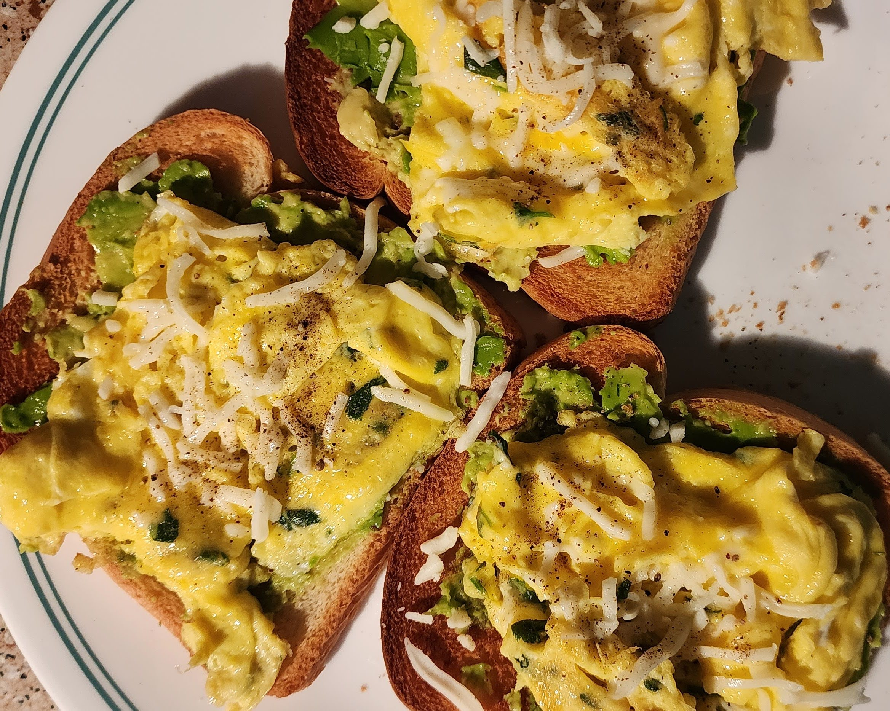

Scrambled Eggs and Avocado Toast

Quick and easy breakfast that only takes 10-15 minutes to prepare! Scrambled eggs are pretty light
but the avocado toast makes it a little more filling with some added protein. The cheese on top adds
some extra flavor as well.
Ingredients
- 3 slices bread
- 3 eggs
- 0.5 avocado
- sprinkle of mozarella cheese
- salt and pepper to taste
Steps
- Crack 3 eggs into a bowl and beat together.
- Cut an avocado in half.
- Toast 3 slices of bread.
- Pour the egg mixture into a frying pan and as it starts to solidify, push into
the center so as to create a "fluffy" texture for the scrambled eggs.
- When the toast is browned to your liking, spread the avocado onto each slice
- Take some of the scrambled eggs and place onto the avocado spread
- Sprinkle on some mozarella cheese on top of each toast
- Add salt and pepper to taste